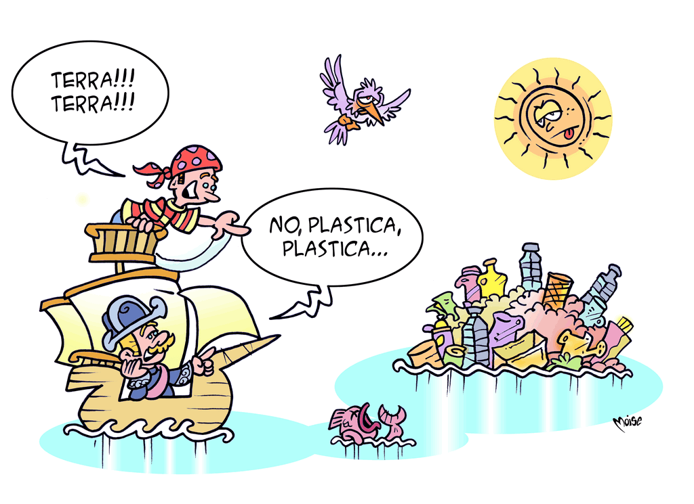
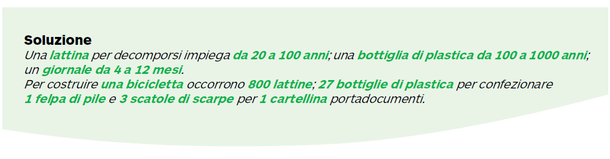

Diamoci una regolata
Ahimè, l'isola raffigurata nella vignetta esiste davvero!
Peggio ancora, ne esistono cinque, non rappresentate
sugli atlanti, ma individuate nei diversi oceani. La
più famosa è la Great Garbage Patch, avvistata nel
Pacifico. Si tratta di un enorme accumulo di spazzatura,
in gran parte plastica, dalle dimensioni ignote
(alcuni pensano sia addirittura più grande degli Stati
Uniti!), che si � in parte decomposta in un “brodo” di
polimeri molto dannoso per l'ecosistema.
La crescita dei consumi, l'urbanizzazione e lo sviluppo
economico negli ultimi decenni hanno determinato
un forte incremento nella produzione
dei rifiuti e ridotto le zone disabitate da utilizzare
come discarica.
E i rifiuti sono molto cambiati:
un tempo erano soprattutto organici e facilmente
degradabili (carcasse di animali, escrementi, cocci
e materiale di scarto�); ora abbiamo a che fare
con imballaggi, oggetti di consumo (che hanno vita
breve!), rifiuti elettrici, elettronici o tossici�
Non possiamo nascondere la testa sotto la sabbia, o
meglio, la polvere sotto il tappeto: i tappeti sono finiti!
Ed � essenziale che le nostre abitudini cambino e che
tutti diano il loro contributo. Come? Seguendo la regola
delle 3 R – Riduzione, Riuso e Riciclaggio –, che
scoprirai in dettaglio nelle prossime tappe del nostro
percorso.

